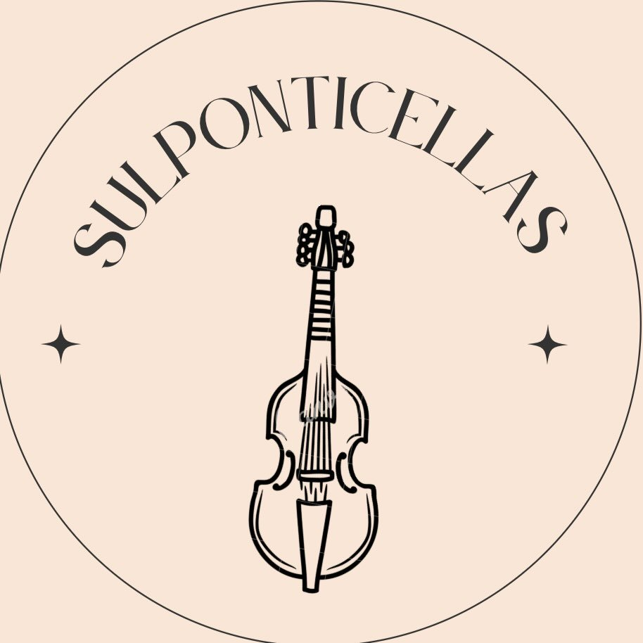
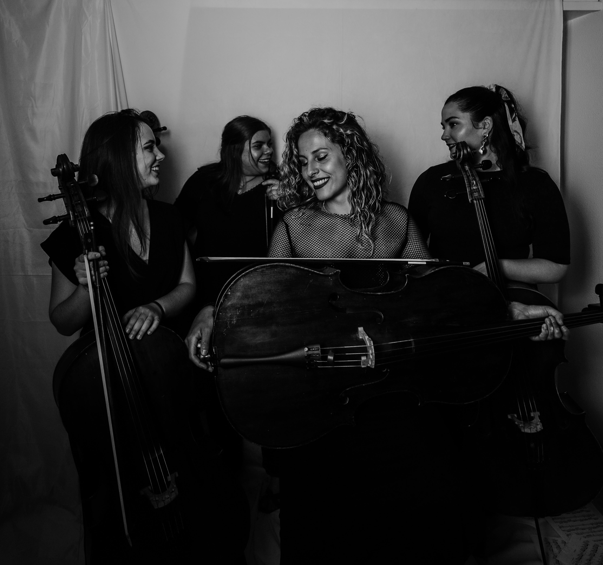
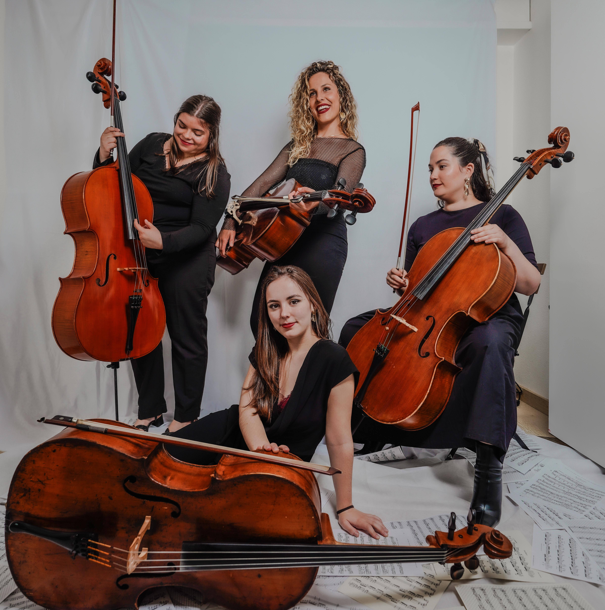
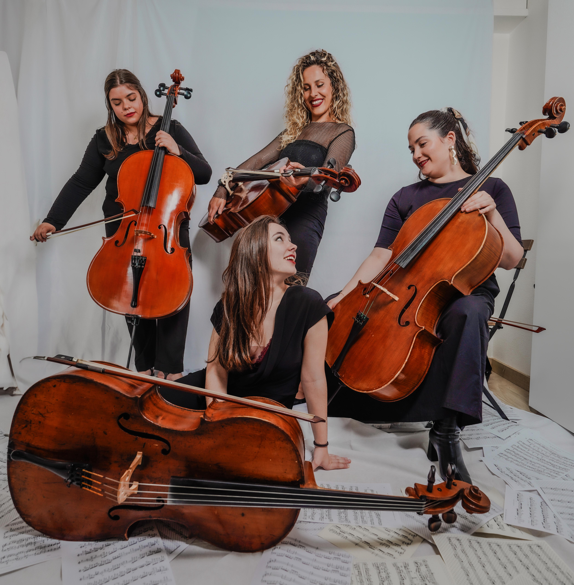
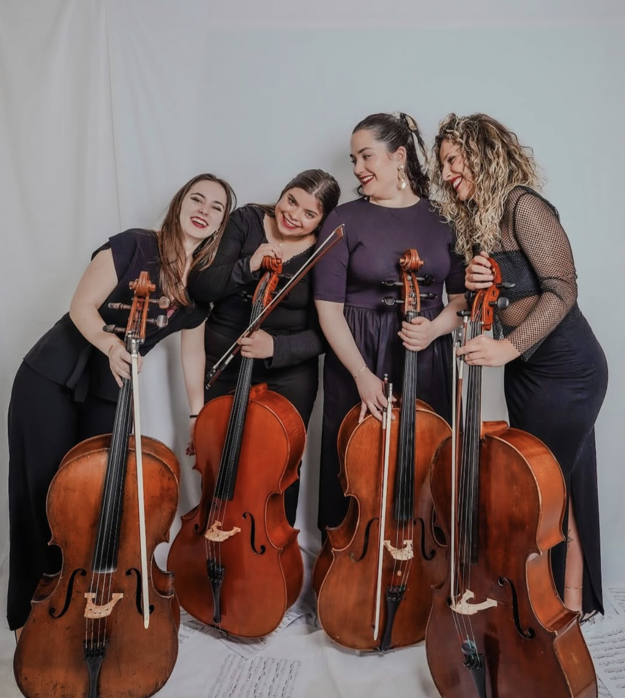
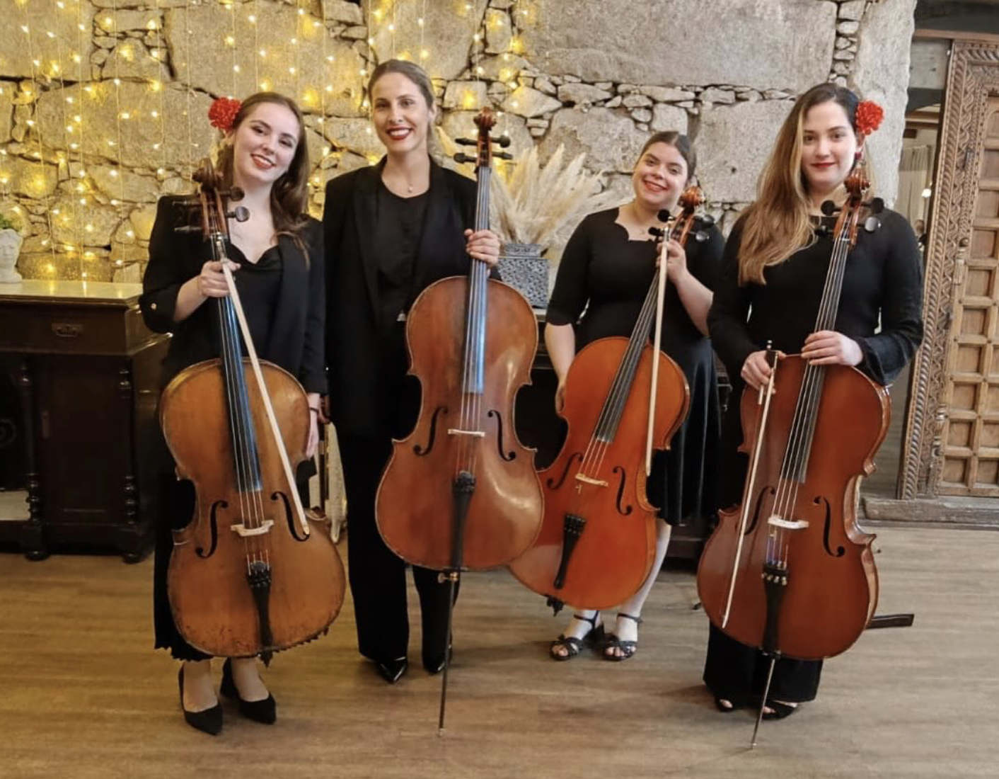
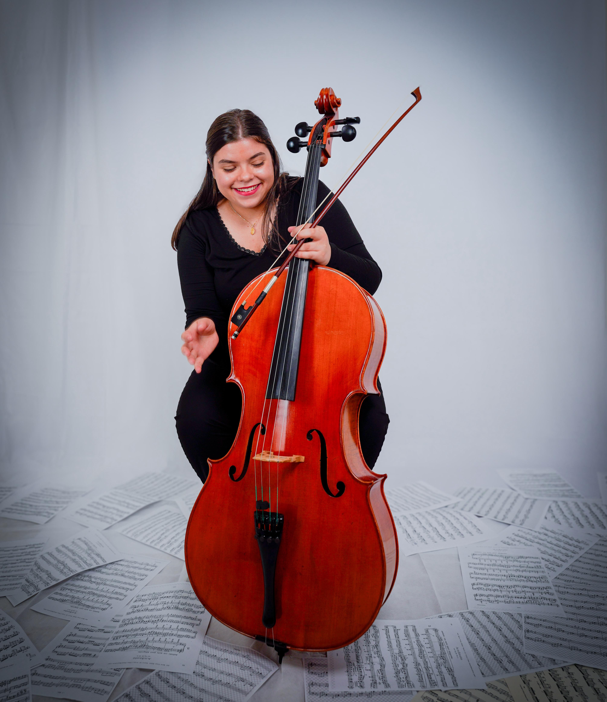
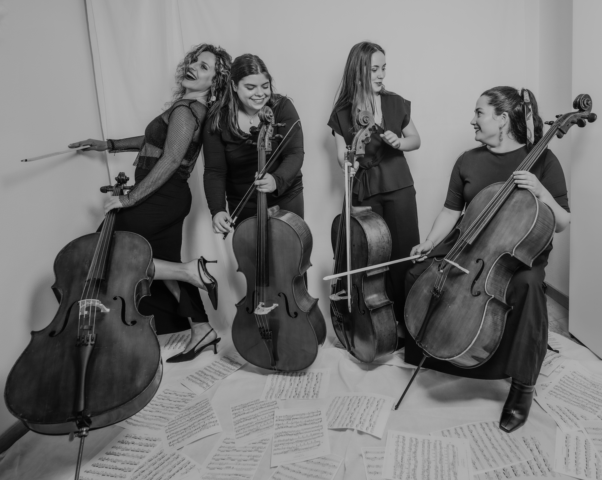
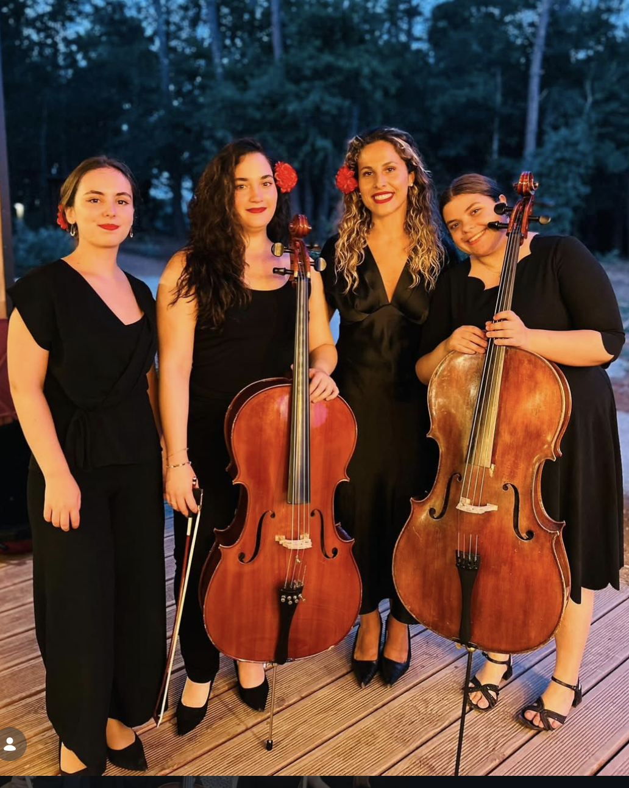
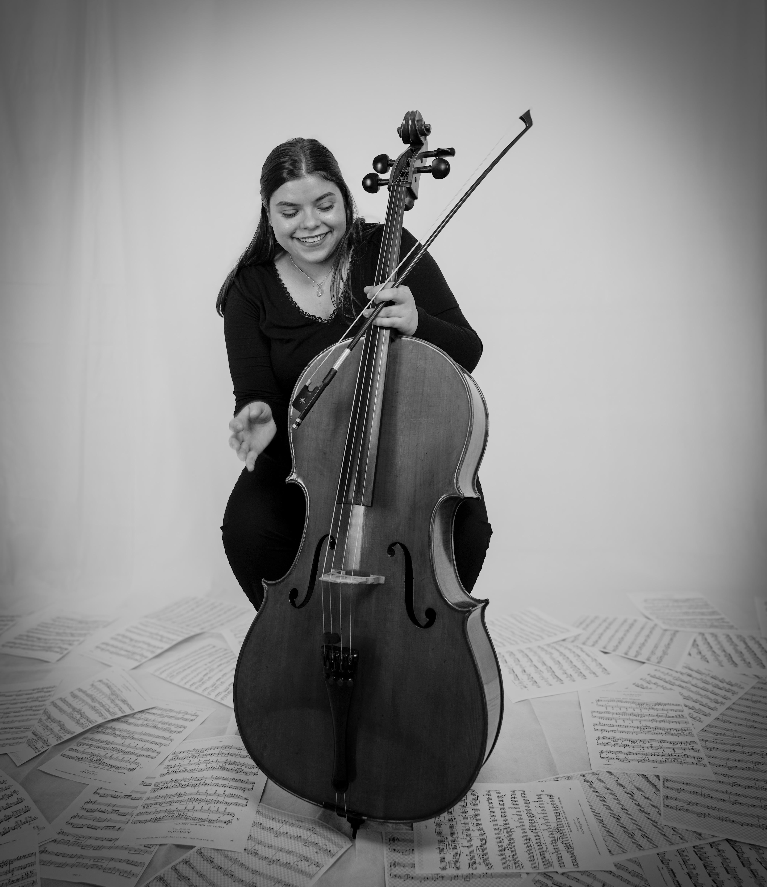

Cerimónia
Entrada, votos, assinaturas e saída com um repertório cuidado, dos clássicos de cordas às músicas que fazem parte da vossa história.
- Duo violino e violoncelo
- Trio de cordas
- Quarteto

Sul Ponticellas Galicia & Portugal
Música ao vivo
Cordas, emoção e memórias que ficam para sempre.
Serviços
Adaptamos formato, repertório e presença musical para que cada instante tenha o seu próprio pulso.
Entrada, votos, assinaturas e saída com um repertório cuidado, dos clássicos de cordas às músicas que fazem parte da vossa história.
Uma atmosfera elegante e próxima para receber convidados, acompanhar conversas e preencher o espaço sem o invadir.
Concertos íntimos, jantares, pedidos, aniversários e encontros especiais na Galiza e em Portugal.
Agenda
Uma zona viva para concertos e aparições públicas. Os eventos são atualizados no painel de administração.
A carregar próximos eventos...
Avaliações
Depois de uma cerimónia ou evento, as palavras de quem esteve lá ajudam futuros casais a imaginar o seu próprio momento.
A carregar avaliações...

Repertório
O nosso repertório une música clássica, bandas sonoras, pop, baladas, boleros e peças tradicionais. Se há uma canção que vos pertence, tornamo-la vossa.
Galeria




Nós
Somos Sul Ponticellas, um projeto de música ao vivo nascido na Galiza para acompanhar casamentos, cerimónias e momentos que pedem algo mais do que uma playlist.
Gostamos de tocar perto: escutar a vossa história, entender o lugar, escolher o repertório com delicadeza e transformá-lo numa memória sonora.


As músicas
Uma apresentação breve de cada integrante, para afinar à medida que recebermos os textos finais.
Lorena traz ao violoncelo uma presença calma, concentrada e muito musical. A sua forma de tocar acrescenta delicadeza ao grupo e ajuda a criar momentos íntimos, sentidos e cheios de intenção.

A Paula tem aquela energia rara de quem parece ter nascido dentro da música. Jovem, expressiva e com uma voz incrível, acrescenta brilho, frescura e uma musicalidade muito própria ao grupo.
Espaço reservado para a apresentação da Verónica: percurso, instrumento, estilo e a forma como a sua presença acrescenta cor ao som do quarteto.
Portuguesa, leva já alguns anos no ramo da música e traz ao violoncelo uma presença firme, sensível e muito próxima. É uma das vozes graves que dão corpo e calor ao som de Sul Ponticellas.
“A música que soa quando já não fazem falta palavras.”
Reservar
Um formulário simples para percebermos a data, o tipo de evento e como vos podemos acompanhar.